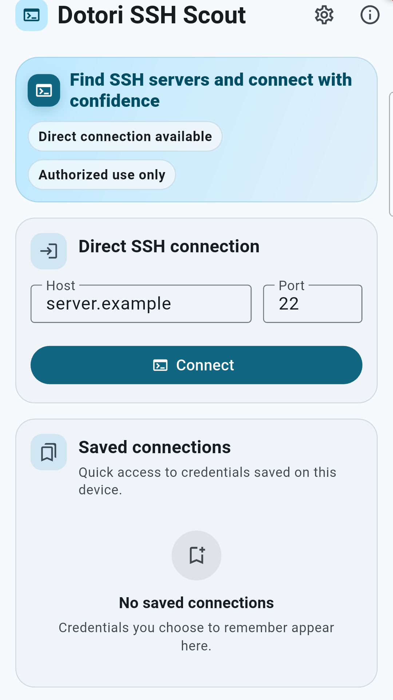
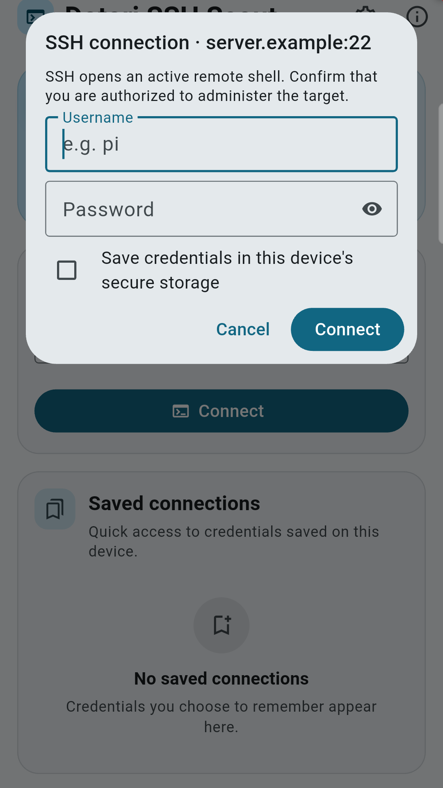
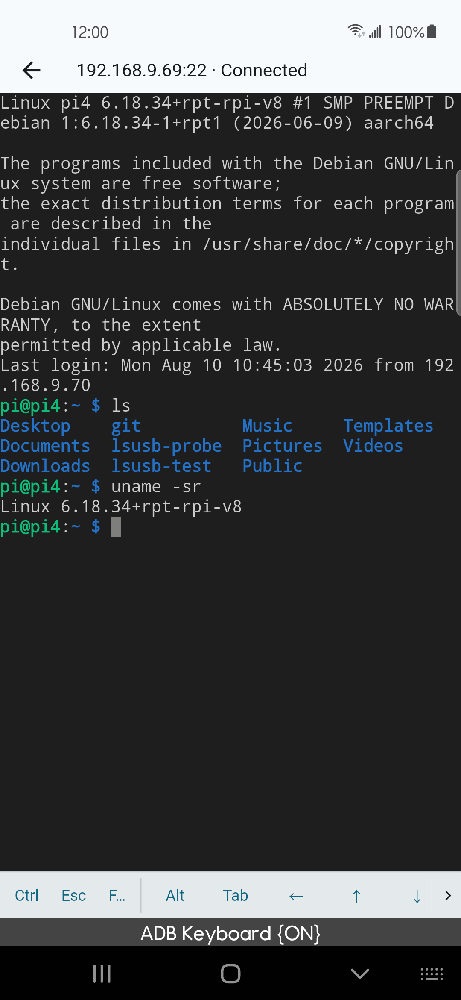
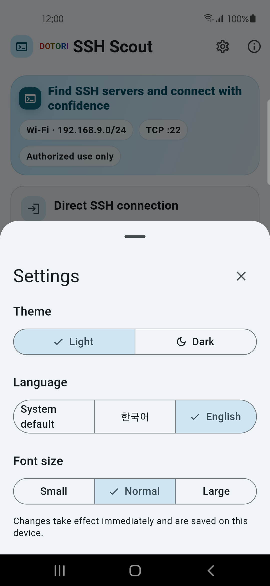
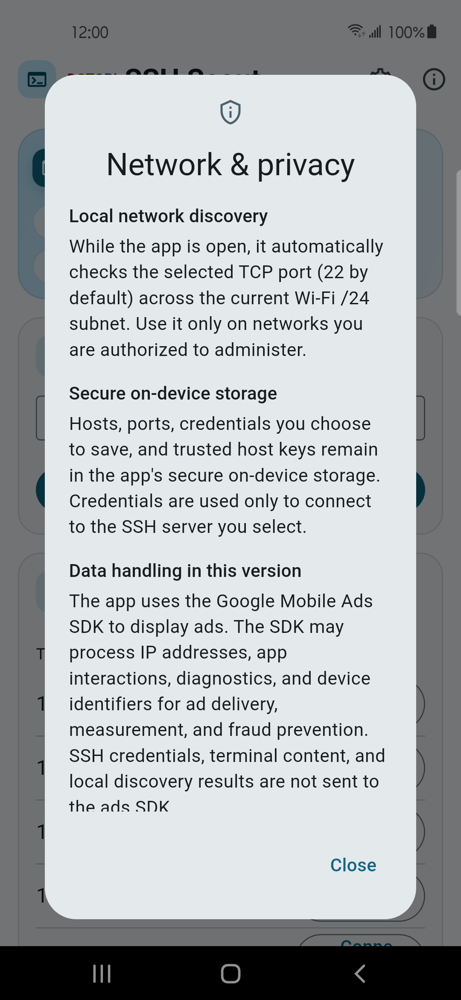
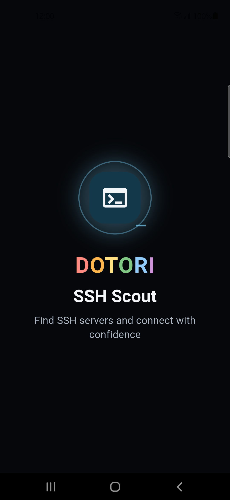

Short answer. On Wi-Fi, test the selected TCP port—22 by default—across the
current /24 and present the addresses that accept a connection. Then begin SSH
normally: verify the server's host-key fingerprint before sending credentials. Discovery can
find an open port; it cannot decide that a changed host key is safe.
Dotori SSH TerminalCombines local port discovery, direct host entry, an Android terminal, secure on-device credential storage, and TOFU host-key checks.
Find the service before asking for credentials
If you know that an SSH server is somewhere on the current Wi-Fi but not which address it has,
a narrow port scan is enough. For a /24, test the 254 host addresses on the chosen
port and list the ones that accept a TCP connection. If SSH runs on a nonstandard port, scan
that port instead of assuming 22.
An open port is still only a candidate. The service may not be SSH, and a closed port may mean that the server is asleep, filtered, on another VLAN, or listening elsewhere. Direct connection by IP address or hostname should remain available even when the phone is not on Wi-Fi.
Keep discovery data separate from secrets
A handoff from a network scanner needs only the target coordinates:
host + port
not username + passwordThe receiving SSH app should open its own credential prompt. That keeps passwords out of deep links, browser histories, logs, and another app's storage. If you choose to remember credentials, they belong in the SSH app's private secure storage and should be keyed by host and port.
TOFU starts after the network connection
SSH host keys answer a different question from passwords. A password proves who the user is to the server. The host key helps the user recognize the server. With Trust On First Use (TOFU), the first connection shows the key type and SHA-256 fingerprint and asks the user whether to remember it.
On later connections, an identical fingerprint can proceed. A different fingerprint deserves a prominent warning because it may mean the server was reinstalled or its keys were rotated—but it can also indicate interception. Do not replace the saved fingerprint silently. Verify the new key through a trusted channel before accepting it.
What to check when no SSH host appears
- Confirm that the SSH service is running and listening on the port being scanned.
- Check whether the phone and server are in the same reachable network, not separated by client isolation or a VLAN.
- Try direct connection with a known IP or hostname; discovery and connection are separate paths.
- Check the server firewall and whether it allows the phone's subnet.
- If a host key changed, stop treating it as a discovery problem and verify the server identity.
SSH grants command execution on another machine. Use it only on systems and networks you own or are authorized to administer.
Direct connection, prompt, terminal, settings, and privacy screens






Dotori SSH Terminal finds hosts on the selected local port, then keeps SSH credentials, terminal content, and trusted host keys in the SSH connection path. More about Dotori SSH Terminal